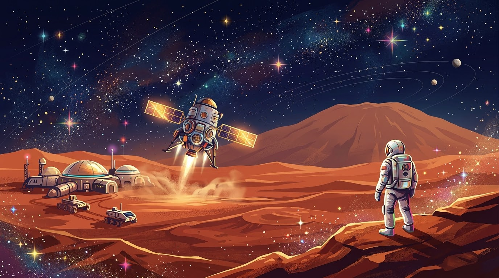
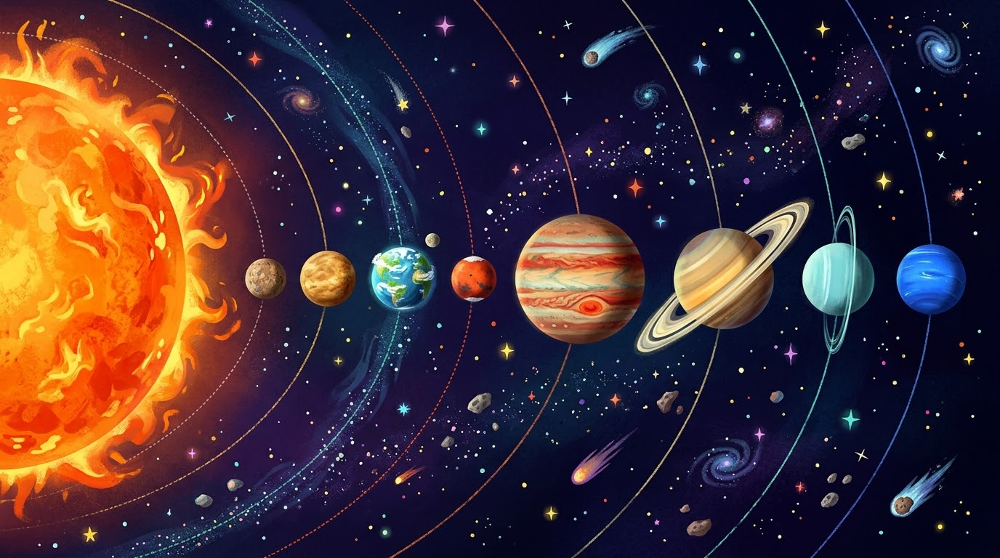
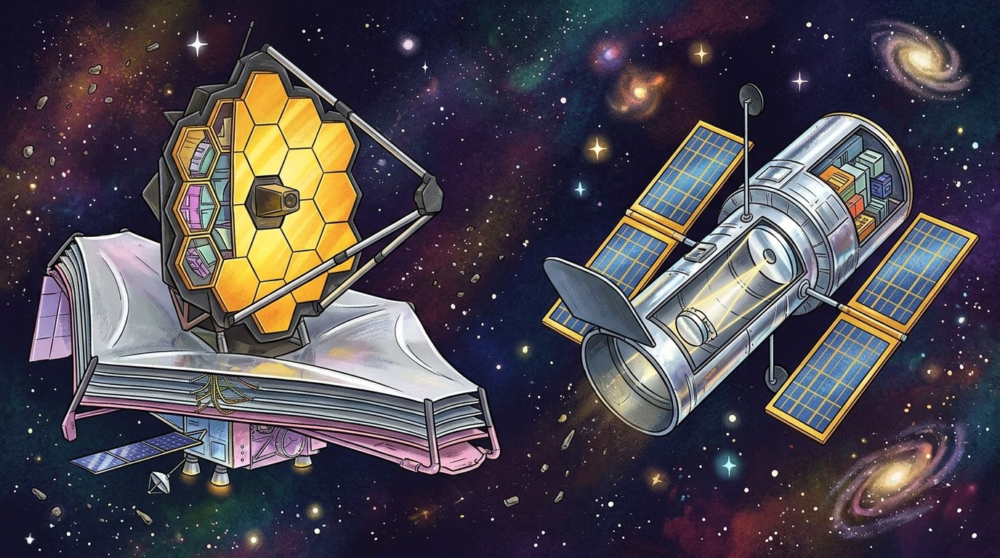
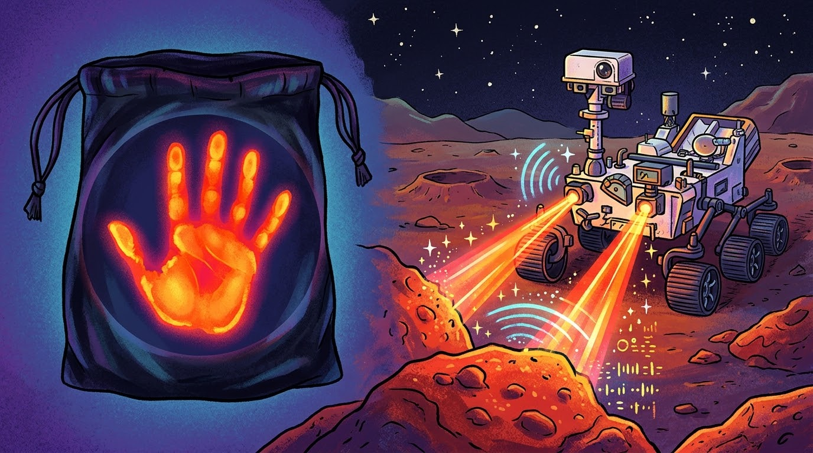

Team Excrim · NASA Space Apps Challenge 2026
Junior Astronaut
Handbook
MISSION MARS · THE 2-YEAR WINDOW
How space works, how rockets fly, and how astronauts survive on Mars.
Read this book first, then play the game!
For Junior Astronauts aged 7–12 · Real NASA science inside
Chapter 4 · Our cosmic neighbourhood
Where Is Mars?

Our Sun is a star so big that about one million Earths could fit inside it. Eight planets travel around it.
Remember the planets in order with this silly sentence: "My Very Educated Mother Just Served Us Noodles!"
1 Mercury: closest to the Sun, full of craters
2 Venus: thick clouds, the hottest planet
3 Earth: our home, with air and oceans
4 MARS: cold, dusty, red. Our mission!
5 Jupiter: the biggest, with a giant storm
6 Saturn: rings of ice and rock
7 Uranus: an ice giant that rolls on its side
8 Neptune: dark, cold, super windy
6
Chapter 11 · Super space eyes
How Do We See Far Away?

James Webb (left) and Hubble (right) space telescopes.
Webb's golden mirror has 18 six-sided pieces (hexagons). It folds up like origami to fit inside a rocket, then opens in space. Its 5-layer sunshield is as big as a tennis court!

Heat vision: an infrared camera can "see" a warm hand inside a black bag.
Infrared light is light our eyes can't see: it is heat! Webb uses it to look through space dust at baby stars, and Mars orbiters use it to study the rocks of Mars.
13
Training check: the same puzzles as in the game!
Junior Astronaut Quiz
1. What does the ENGINE NOZZLE do?
Pushes gas down, rocket goes upKeeps astronauts warmStores foodTalks to Earth
2. Where do the ENGINES go on a rocket?
On the topAt the bottomIn the middleOn the side door
3. Rockets are built…
From the top downFrom the bottom upLying on the sideIn any order
4. What does the FUEL VALVE do?
Turns on the lightsOpens and closes the fuel, like a tapMakes oxygenSteers the rocket
5. Which machine makes OXYGEN from Mars air?
MOXIEThe fuel tankThe radioThe parachute
6. What is Mars air mostly made of?
OxygenCarbon dioxideHeliumWater
7. Where can astronauts find water on Mars?
In riversFrom rainIce under the groundIn the oceans
8. The FLIGHT COMPUTER is like the rocket's…
LegsLunchboxBrainWheels
9. How often do Earth and Mars line up for the trip home?
Every dayEvery weekAbout every 2 yearsNever
10. What do we call one day on Mars?
A moonA solAn orbitA week
11. How long does a radio message take from Mars to Earth?
1 second3 to 22 minutes1 whole day1 year
12. A rocket flies like a balloon you let go. Why?
Air rushes out the backBalloons are magicThe wind blows itIt is very light
Answers: 1 pushes gas down · 2 bottom · 3 bottom up · 4 like a tap · 5 MOXIE · 6 carbon dioxide · 7 ice under the ground · 8 brain · 9 about every 2 years · 10 a sol · 11 3 to 22 minutes · 12 air rushes out the back
17
Your turn, Commander
Design Your Own Mars Base
Draw a Mars base. Include: solar panels ☐ · a shielded shelter ☐ · an oxygen machine ☐ · an ice drill ☐ · a rover ☐ · a launch pad ☐
My #1 survival tip before I play:
19
Real science behind this book
NASA Sources and Credits
NASA data and learning resources
• DONKI (Space Weather Database, NASA CCMC): the real solar flares in the game.
• Curiosity RAD: radiation on the Mars surface (about 0.67 mSv per sol).
• Perseverance MOXIE: making oxygen from Mars air.
• MRO SHARAD radar: ice under the Mars ground.
• Opportunity: the 2018 global dust storm.
• NASA/JPL Mars Activities: balloon scale model, rover race, core sampling.
• James Webb Space Telescope Fun Pad (NP-2011-04-201-GSFC) and Hubble activity sheets (EP-2015-03-00x-JSC).
Pictures
• NASA photos (public domain): Apollo 11 Saturn V (S69-39961), Artemis I (NHQ202211160030), Mars by Viking (PIA00407), Earth from Mars by Curiosity (PIA17936), MOXIE (PIA24203), 2018 dust storm (PIA22329), Perseverance and Ingenuity selfie (PIA24542). Courtesy NASA/JPL-Caltech.
• Illustrations: Team Excrim.
• Game screenshots: Mission Mars (Unity). 3D models from NASA 3D Resources; "Astronaut" by Jungle Jim (Sketchfab, CC-BY).
Made by Team Excrim for the NASA Space Apps Challenge 2026: Build a Junior Astronaut Mission Trainer.
Not an official NASA publication.
21